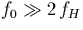
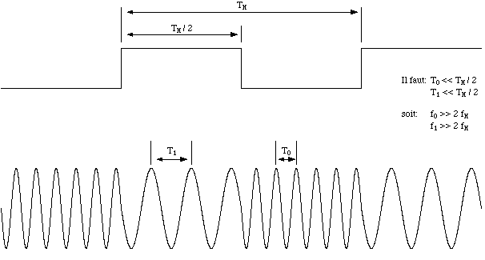
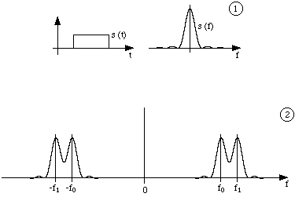
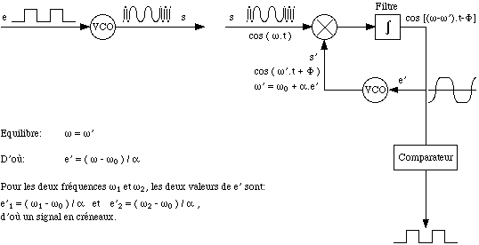

Cette mthode consiste mettre un signal sinusodal, soit de frquence
f0 lorsque le bit du signal numrique transmettre vaut 0, soit de
frquence f1 dans le cas contraire. Afin que la largeur de la bande de
frquences soit aussi faible que possible, il faut que f0 et f1
soient proches l'une de l'autre. Typiquement, l'on retient que
(f1-f0)/2 doit tre de l'ordre de 10% de (f0+f1)/2.
D'autre part, afin que le signal de frquence f0 ou f1 soit dfini sans ambigut (i.e. que ce signal soit mis suffisamment longtemps cette frquence pour que le rcepteur puisse sans ambigut rcuprer un signal cette frquence), il est ncessaire que la priode correspondant f0 ou f1 soit nettement plus petite que la dure d'un tat lectrique stable du signal numrique initial (cf figure 4.2). Si fH reprsente la frquence du signal numrique initial (ici, fH=80kHz), on prendra donc

, ce qui nous amne prendre f0 et f1 de l'ordre de 1MHz.


Bien sr, si l'metteur module de la sorte le signal qu'il transmet, le rcepteur doit pouvoir effectuer l'opration inverse, c'est--dire la dmodulation. Mais cette opration n'est pas, a priori, vidente! Aussi une astuce permet-elle de s'en sortir trs avantageusement: il s'agit d'employer, l encore, une boucle de phase (cf figure 4.4). Le principe de ce montage est de prendre le mme circuit pour la dmodulation que celui qui a t employ pour la modulation (circuit base de V.C.O.), puis d'asservir le circuit de dmodulation de telle sorte que sa sortie gale celle du circuit de modulation. Ds lors, puisque les circuits sont les mmes, on peut infrer que si leur sortie sont gales, leur entre le sont aussi: on retrouve ainsi l'entre du circuit rcepteur le signal qui tait l'entre du circuit metteur, c'est--dire le signal numrique, qui se retrouve ainsi dmodul!

A ce stade du montage, nous avons rencontr un petit problme qui, bien que n'ayant aucun rapport avec la thorie et les principes de fonctionnement, mrite toutefois quelque attention... En effet, une fois l'oscillateur du dmodulateur rgl, nous avons cbl la sortie de ce dernier circuit sur la maquette de conversion numrique/analogique. Les rsultats taient probants pour les signaux analogiques (la voix passait correctement d'un poste tlphonique l'autre), et pour tous les signaux numriques constitus de mots 8 bits (composs l'aide des 8 touches de la maquette "mettrice") sauf ceux qui correspondaient une suite de huit 1. En fait, la maquette, en prsence de tels signaux, consommait une puissance importante et, comme tous les botiers taient relis la mme alimentation, elle "dcrochait"... Ds lors, la solution a consist soulager le travail de l'alimentation commune tous les botiers en en mettant une autre en parallle; le rsultat ne s'est alors plus fait attendre; la communication tait pleinement rtablie!